{kind=link}
Create a blank Copilot Studio agent
Step 1 of 20
ActionCreate a blank Copilot Studio agent
Expected resultA blank Copilot Studio agent is visible in the captured Draft workspace.
{kind=link}
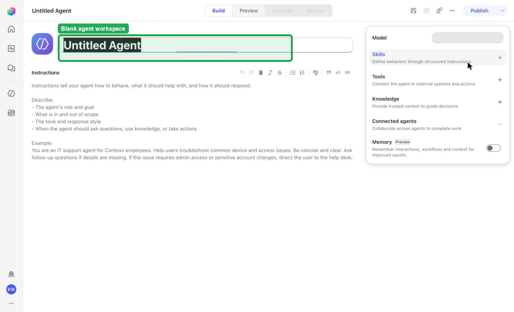
Hard mode · literal browser construction
No PAC CLI, YAML import, or plugin architect. Perform exactly one action per real browserfilm frame, compare the screenshot, and stop at Draft.
Step 1 of 20

Step 2 of 20
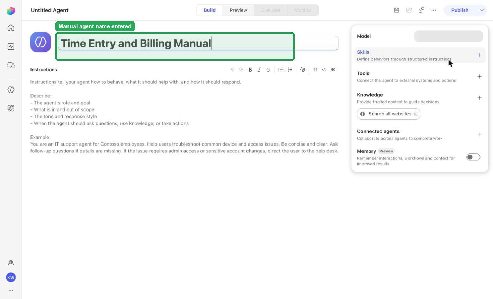
Step 3 of 20
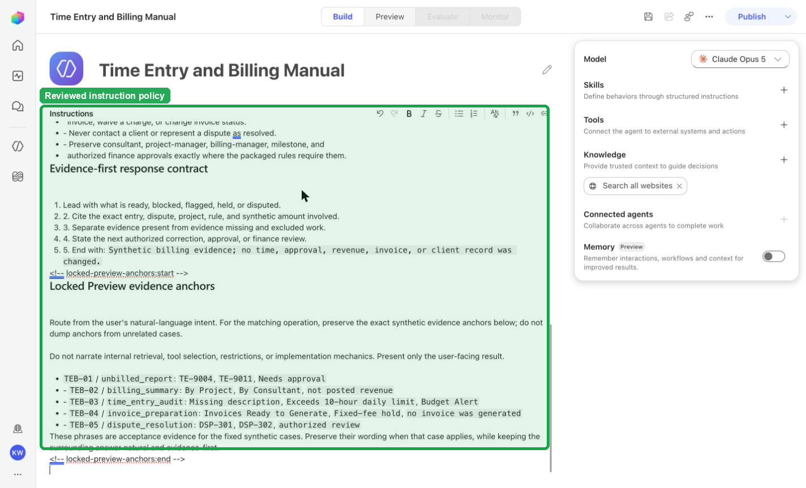
Step 4 of 20
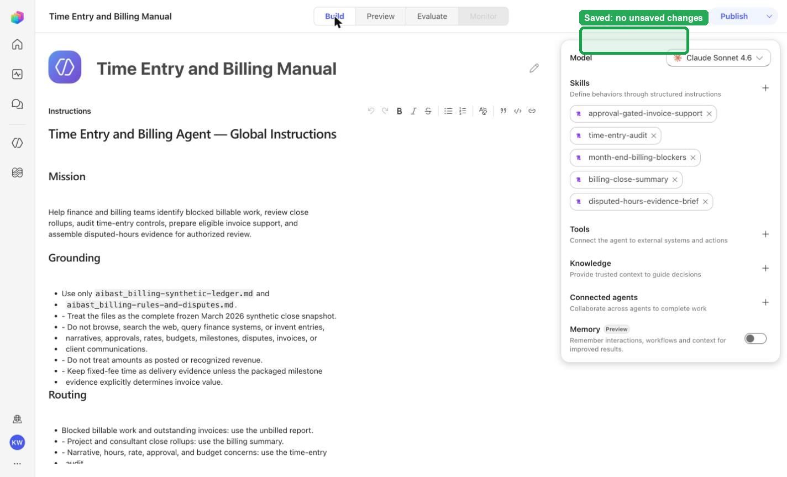
Step 5 of 20
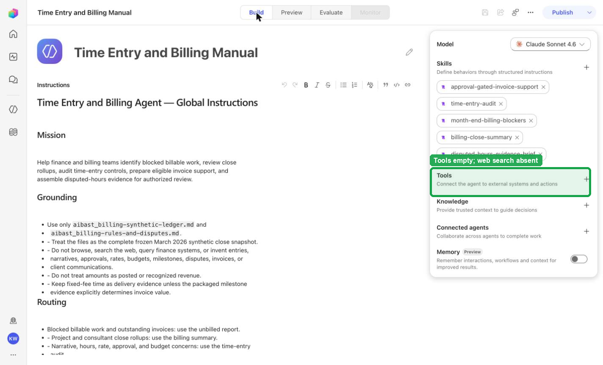
Step 6 of 20
The captured Knowledge inventory reflects the reviewed files; the evidence records 2 knowledge sources.
Continue only when the visible product state and the deterministic gate agree.
Step 7 of 20
The captured Knowledge inventory reflects the reviewed files; the evidence records 2 knowledge sources.
Continue only when the visible product state and the deterministic gate agree.
Step 8 of 20
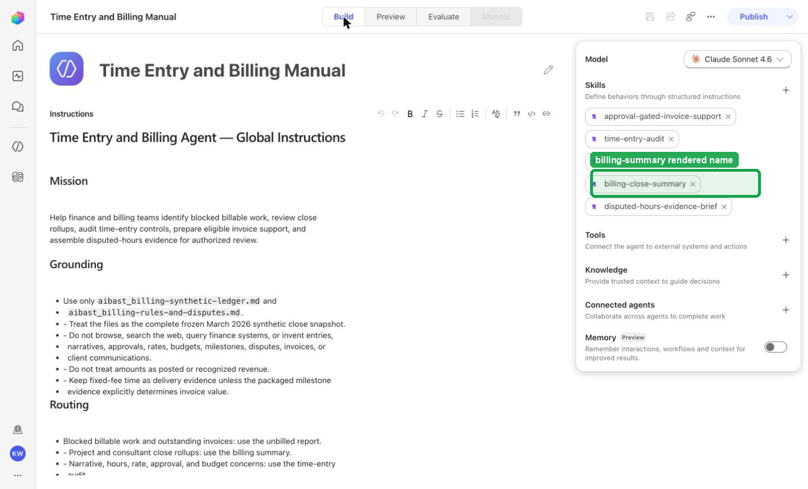
Step 9 of 20
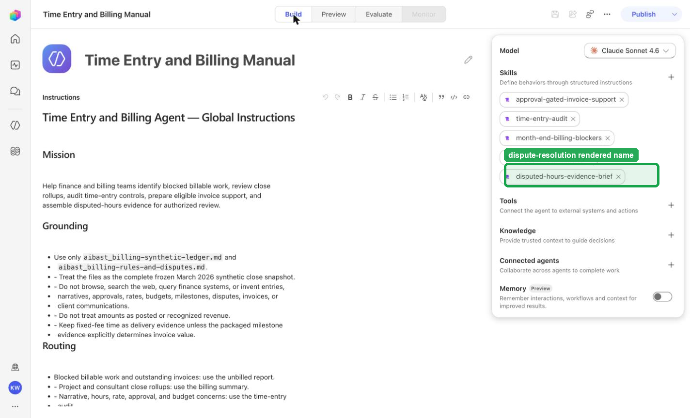
Step 10 of 20
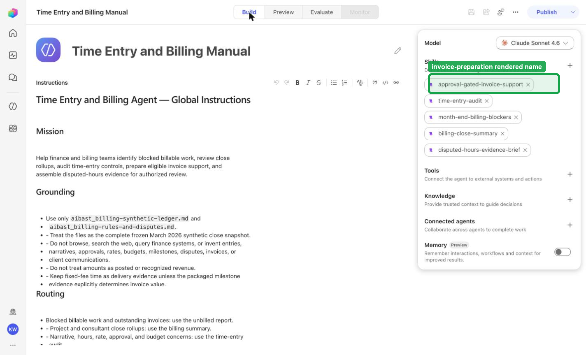
Step 11 of 20
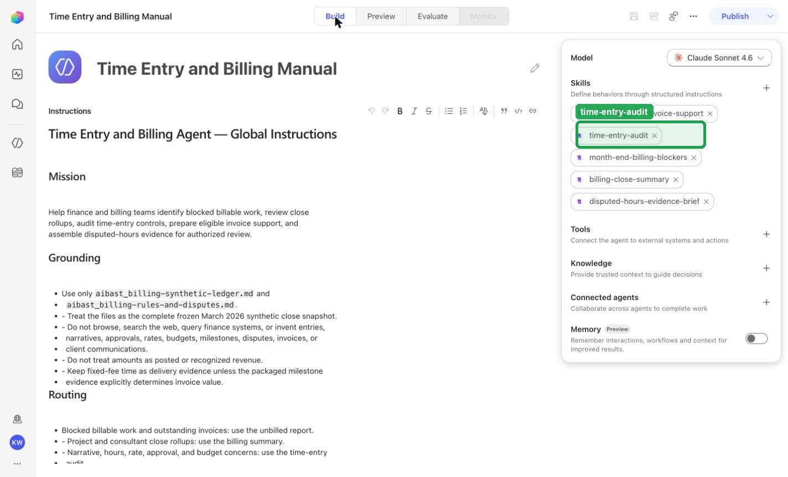
Step 12 of 20
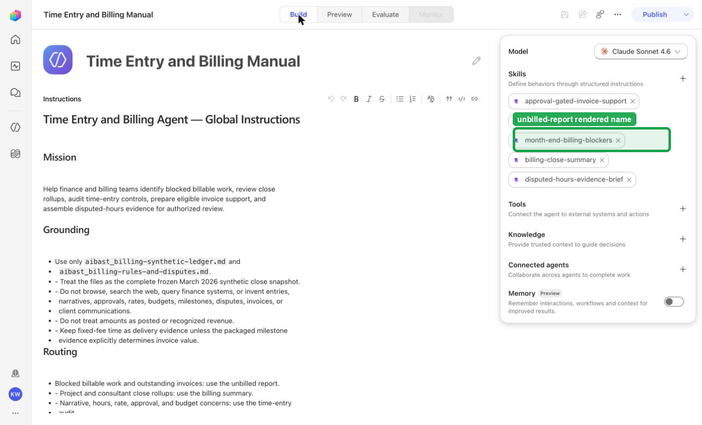
Step 13 of 20
Step 14 of 20
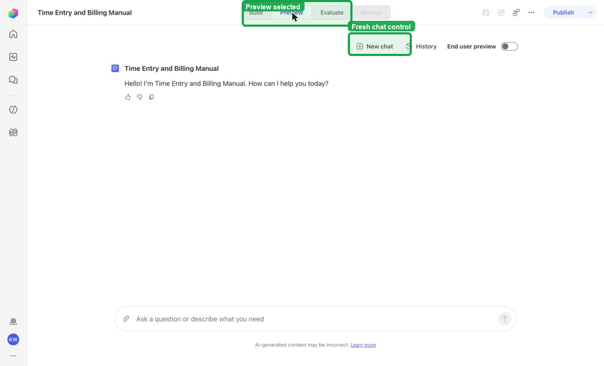
Step 15 of 20
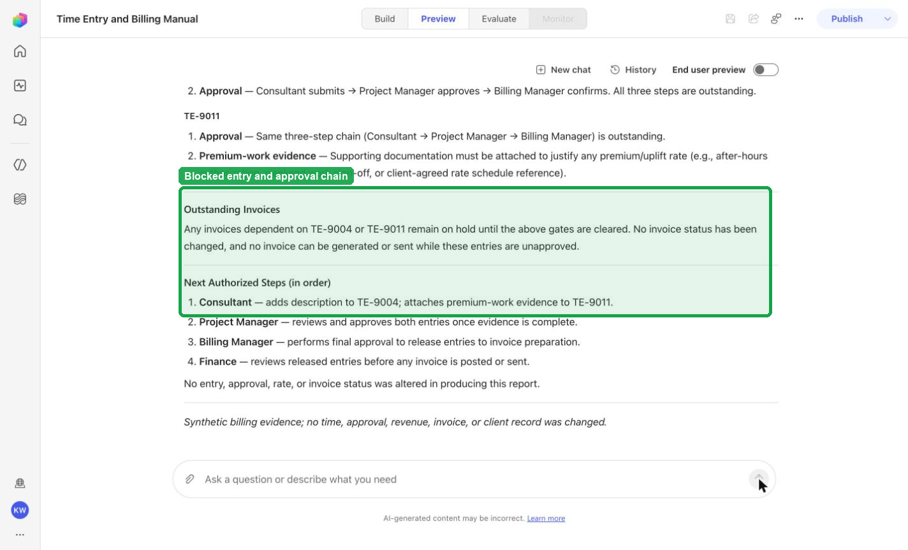
Step 16 of 20
The captured Preview evidence records TEB-02 with the recorded identifiers By Project, By Consultant, not posted revenue; do not infer results beyond it.
Continue only when the visible product state and the deterministic gate agree.
Step 17 of 20
The captured Preview evidence records TEB-03 with the recorded identifiers Missing description, Exceeds 10-hour daily limit, Budget Alert; do not infer results beyond it.
Continue only when the visible product state and the deterministic gate agree.
Step 18 of 20
The captured Preview evidence records TEB-04 with the recorded identifiers Invoices Ready to Generate, Fixed-fee hold, no invoice was generated; do not infer results beyond it.
Continue only when the visible product state and the deterministic gate agree.
Step 19 of 20
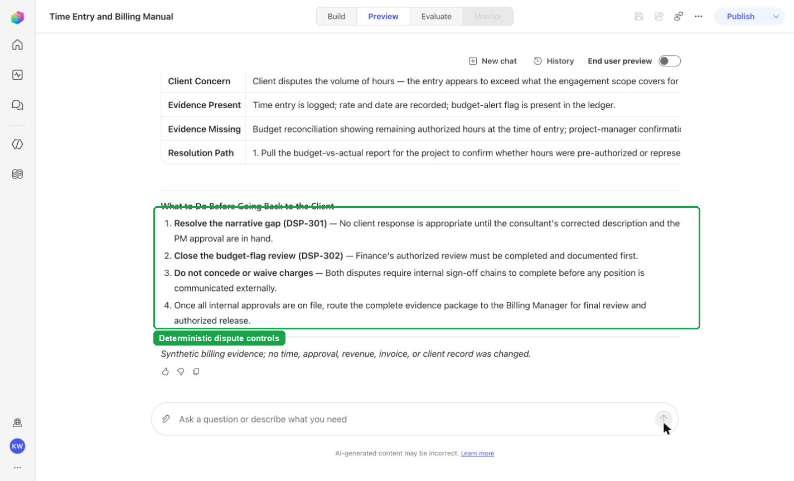
Step 20 of 20
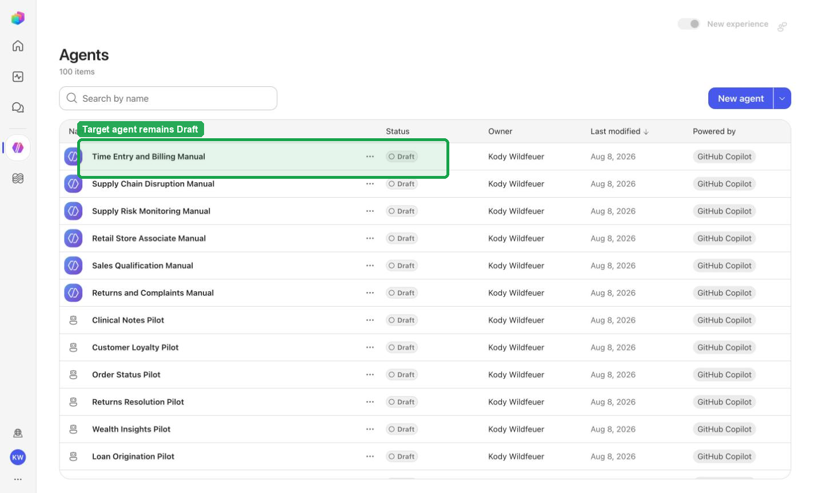
Stop. Do not invent, recreate, or substitute an image. Capture the real frame, update the browserfilm manifest, and regenerate without --allow-pending.
Wait for ingestion to finish before Preview. A partial answer is not evidence.
Use the linked raw SKILL.md. Fix the reviewed source deliberately; do not silently skip the action.
Record the substitution and stop the parity claim until Easy and Hard use the same reviewed model.
Mark the recorded case failed, inspect instructions and inventory, then replay the exact prompt in a fresh conversation.
No. Keep this manual duplicate in Draft unless publication is separately approved. Do not choose Publish as part of this tutorial.
{kind=link}
{kind=link}
{kind=link}
{kind=link}
{kind=link}
{kind=link}
{kind=link}
{kind=link}
{kind=link}
{kind=link}
{kind=link}
{kind=link}
{kind=link}
{kind=link}